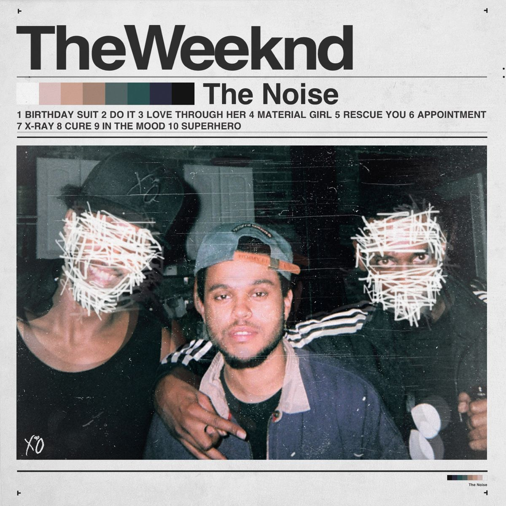

The Noise
El proyecto que nunca debía salir a la luz. Filtrado, no oficial.
Un EP de 6 canciones que se filtró bajo el nombre "The Noise" y el sello SaintFoxx Records. No forma parte de la discografía oficial y en Spotify aparece acreditado a un artista distinto, pero para muchos fans su sonido y procedencia lo vinculan directamente a Abel. Una pieza rara y oscura para quienes siguen cada rincón del universo XO.
- 01Rescue You
- 02Do It
- 05X-Ray
- 06Birthday Suit